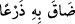
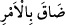
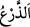
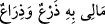
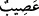

uzak değildir.
“Elçilerimiz Lût’a gelince onlar yüzünden kaygılandı.” Elçilerin gelmesi Lût’u
kaygılandırdı. Fakat bu kaygı onların misafir olarak gelmesinden ve Lût’un da
misafirlere ikram etmekten ve onları ağırlamaktan hoşlanmamasından değildi. Çünkü bir
peygamber evi böyle şeylerden uzaktır. Aksine bu kaygı, elçilerin yakışıklı ve güzel
yüzlü erkekler şeklinde gelmesinden ileri gelmiştir. Lût elçilerin insan olduklarını
zannederek kavminin onlara kötü niyetle yakalaşacaklarından ve kendisinin buna karşı
koyamayıp onları savunamayacağından endişe etmişti.
Burada ayrıca kavminin azapla helak olacağını sezen Lût’a hüzün ve tasanın ârız
olduğuna da işaret edilmektedir. Gerek İbrahim (a.s.) ile Lût (a.s.), gerekse onların
kavimleri arasındaki farklılığa bir bakın. Elçilerin İbrahim (a.s.)’a gelişleri sevinç ve
müjde iken, Lût (a.s.)’a gelişleri kaygı vermektedir. Hem de sevinç ve müjde önce
verilmiştir. Çünkü Allah’ın rahmeti gazabından önce gelir.
Rivayet edilir ki Allah Teâlâ elçilere: “Lût, onların aleyhinde dört kez şâhidlik
etmedikçe onları helak etmeyin.” buyurdu. Elçiler Lût (a.s.)’ın yanına gelince Lût (a.s.)
elçilere: “Şu kasabalıların yaptıklarını siz de duydunuz mu?’ dedi. Elçiler de “Ne
yapıyor bu kasabalılar?” diye sorunca Lût (a.s.): “Allah’a yeminle şehâdet ediyorum ki
bunlar davranış bakımından yeryüzünün en kötü insanlarıdır.” dedi ve bunu dört kez
tekrarladı. Elçiler daha sonra Lût (a.s.)’ın evine girdiler. Onların buraya girdiğini kimse
bilmeden Lût (a.s.)’ın kâfir karısı ileride de göreceğiniz gibi elçilerin oraya geldiğini
herkese duyurdu.
“Onlardan dolayı içi daraldı da” onların varlığından dolayı göğsü yahut kalbi yahut
gücü ve takati daraldı.
Bu ifâde, istenmeyen bir duruma karşı koymaktan ve ona bir çare bulmaktan âciz
kalarak çok zor duruma düşmekten kinâyedir. Bir kimse istenmeyen bir duruma düşüp
de ondan kurtulamayınca bu ifâde kullanılır.
el-Ahterî’de şöyle denilir: “__WORD__” tâkati kesildi, demektir. “__WORD__ ” ise bir
şeye gücü yetmedi, takat getiremedi, ona elini uzattı, ama ulaşamadı, demektir.
Ezherî de şöyle der: “__WORD__” lafzı, tâkat kelimesi yerine kullanılır. Kelimenin aslı
şurdan gelmektedir: Deve, yürürken adımlarının genişliği kadar ön ayaklarını açar.
Gücünün üzerinde bir şey yüklendiği zaman ayakları, yâni adımları daralır, zaaf gösterir
ve boynunu ileriye doğru uzatır. “__WORD__” kelimesi daha sonra genişlik ve tâkatin azalması
mânâsında kullanılmıştır. Mesela, onu yapmak için gücüm ve takatim yok mânâsında “__WORD__” denilmiştir.”
“Bu çetin bir gündür” dedi.” Yani benim için çok sıkıntılı bir gündür. Rebîu’l-
ebrâr’da da belirtildiği üzere “__WORD__” lafzının sıkıntılı mânâsına gelmesi, Cürhüm
kabilesinin lugatine göredir.